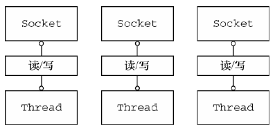
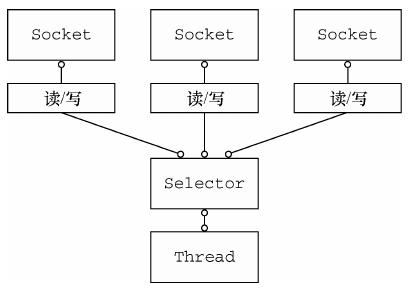
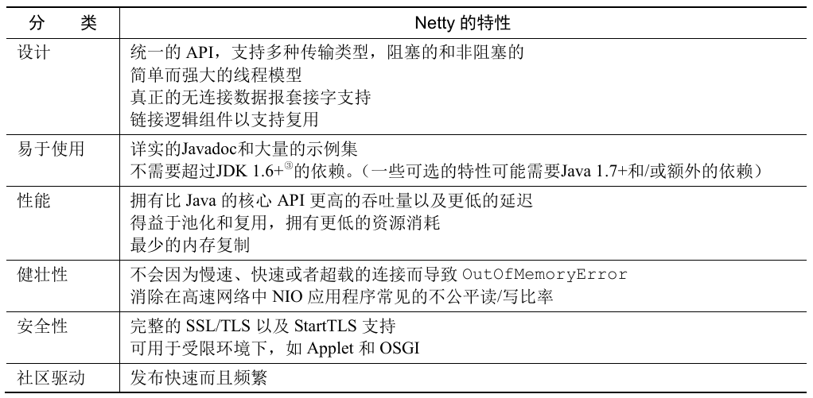
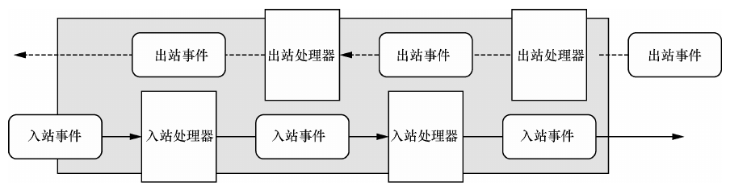

1. 第1章 Netty -- 异步和事件驱动
Netty 是一款异步的事件驱动的网络应用程序框架, 支持快速地开发可维护的高性能的面向协议的服务器和客户端。
Netty 优雅地处理了网络编程、多线程处理和并发等相关的知识, 使得即使是网络编程新手也能使用。
Netty 终究是一个框架, 它的架构方法和设计原则是: 每个小点都和它的技术性内容一样重要, 穷其精妙。
1.1. Java 网络编程
早期的 Java API(java.net) 只支持由本地系统套接字库提供的所谓的阻塞函数。
使用阻塞 I/O 处理多个连接，需要为每个新的客户端 Socket 创建一个新的 Thread。

- 上述方案的问题
- 第一, 在任何时候都可能有大量的线程处于休眠状态, 只是等待输入或者输出数据就绪, 这可能算是一种资源浪费。
- 第二, 需要为每个线程的调用栈都分配内存, 其默认值大小区间为 64 KB 到 1 MB, 具体取决于操作系统。
- 第三, 即使 Java 虚拟机(JVM)在物理上可以支持非常大数量的线程, 但是远在到达该极限之前, 上下文切换所带来的开销就会带来麻烦。
1.1.1. Java NIO
本地套接字库很早就提供了非阻塞调用, 其为网络资源的利用率提供了相当多的控制
- 可以使用 setsockopt() 方法配置套接字, 以便读/写调用在没有数据的时候立即返回, 也就是说, 如果是一个阻塞调用应该已经被阻塞了;
- 可以使用操作系统的事件通知 API 注册一组非阻塞套接字, 以确定它们中是否有任何的套接字已经有数据可供读写。
Java 对于非阻塞 I/O 的支持是在 2002 年引入的, 位于 JDK 1.4 的 java.nio 包中。
新的还是非阻塞的
- NIO 最开始是 New Input/Output 的英文缩写。
- 如今大多数的用户认为 NIO 代表非阻塞 I/O(Non-blocking I/O)。
- 阻塞 I/O(blocking I/O)是旧的输入/输出(old input/output, OIO)。有时它也被称为普通 I/O(plain I/O)。
1.1.2. 选择器
- 使用 Selector 的非阻塞 I/O

class java.nio.channels.Selector 是 Java 的非阻塞 I/O 实现的关键。
- 它使用了事件通知 API 以确定在一组非阻塞套接字中有哪些已经就绪能够进行 I/O 相关的操作。
- 因为可以在任何的时间检查任意的读操作或者写操作的完成状态, 所以一个单一的线程便可以处理多个并发的连接。
总体来看, 与阻塞 I/O 模型相比, 这种模型提供了更好的资源管理
- 使用较少的线程便可以处理许多连接, 因此也减少了内存管理和上下文切换所带来开销;
- 当没有 I/O 操作需要处理的时候, 线程也可以被用于其他任务。
尽管已经有许多直接使用 Java NIO API 的应用程序被构建了, 但是要做到正确和安全并不容易。
在高负载下可靠和高效地处理和调度 I/O 操作是一项繁琐而且容易出错的任务, 最好留给高性能的网络编程专家 -- Netty。
1.2. Netty 简介
面向对象的基本概念: 用较简单的抽象隐藏底层实现的复杂性。
在网络编程领域, Netty 是 Java 的卓越框架。它驾驭了 Java 高级 API, 并将其隐藏在一个易于使用的 API 之后。
Netty 的特性总结

1.2.1. 异步和事件驱动
本质上, 一个既是异步的又是事件驱动的系统会表现出一种特殊的、对开发者来说极具价值的行为: 它可以以任意的顺序响应在任意的时间点产生的事件。
这种能力对于实现最高级别的可伸缩性至关重要, 定义为: 一种系统、网络或者进程在需要处理的工作不断增长时, 可以通过某种可行的方式或者扩大它的处理能力来适应这种增长的能力。
异步和可伸缩性之间的联系
- 非阻塞网络调用使得开发者可以不必等待一个操作的完成。完全异步的 I/O 正是基于这个特性构建的, 并且更进一步: 异步方法会立即返回, 并且在它完成时, 会直接或者在稍后的某个时间点通知用户。
- 选择器使得开发者能够通过较少的线程便可监视许多连接上的事件。
与使用阻塞 I/O 来处理大量事件相比, 使用非阻塞 I/O 来处理更快速、更经济。
从网络编程的角度来看, 使用非阻塞 I/O 是构建理想系统的关键, 而且这也是 Netty 的设计底蕴的关键。
1.3. Netty 的核心组件
Netty 的主要构件块
- Channel;
- 回调;
- Future;
- 事件和 ChannelHandler。
上述构建块代表了不同类型的构造: 资源、逻辑以及通知。应用程序将使用它们来访问网络以及流经网络的数据。
1.3.1. Channel
Channel 是 Java NIO 的一个基本构造。
Channel 代表一个到实体的开放连接, 如读操作和写操作。
这里的实体可以是
- 一个硬件设备
- 一个文件
- 一个网络套接字
- 一个能够执行一个或者多个不同的 I/O 操作的程序组件
- 。。。
可以把 Channel 看作是传入(入站)或者传出(出站)数据的载体。因此, 它可以被打开或者被关闭, 连接或者断开连接。
1.3.2. 回调
一个回调其实就是一个方法, 一个指向已经被提供给另外一个方法的方法的引用。这使得后者可以在适当的时候调用前者。
回调在广泛的编程场景中都有应用, 而且也是在操作完成后通知相关方最常见的方式之一。
Netty 在内部使用了回调来处理事件; 当一个回调被触发时, 相关的事件可以被一个 ChannelHandler 接口的实现处理。
1.3.3. Future
Future 提供了另一种在操作完成时通知应用程序的方式。
Future 对象可以看作是一个异步操作的结果的占位符; 它将在未来的某个时刻完成, 并提供对其结果的访问。
JDK 预置了 java.util.concurrent.Future 接口, 但是其所提供的实现, 只允许手动检查对应的操作是否已经完成, 或者一直阻塞直到它完成。
Netty 提供了它自己的 Future 实现 -- ChannelFuture, 用于在执行异步操作的时候使用。
ChannelFuture 提供了几种额外的方法, 这些方法使得开发者能够注册一个或者多个 ChannelFutureListener 实例。
- 监听器的回调方法 operationComplete(), 将会在对应的操作完成时被调用。
- 然后监听器可以判断该操作是成功地完成了还是出错了。如果是后者, 可以检索产生的 Throwable。
- 简而言之, 由 ChannelFutureListener 提供的通知机制消除了手动检查对应的操作是否完成的必要。
每个 Netty 的出站 I/O 操作都将返回一个 ChannelFuture; 也就是说, 它们都不会阻塞。也就是说，Netty 完全是异步和事件驱动的。
需要注意的是, 对错误的处理完全取决于开发者、目标, 当然也包括目前任何对于特定类型的错误加以的限制。
可以把 ChannelFutureListener 看作是回调的一个更加精细的版本。事实上, 回调和 Future 是相互补充的机制; 它们相互结合, 构成了 Netty 本身的关键构件块之一。
1.3.4. 事件和 ChannelHandler
- Netty 使用不同的事件来通知状态的改变或者是操作的状态。这使得开发者能够基于已经发生的事件来触发适当的动作。这些动作可能是:
- 记录日志;
- 数据转换;
- 流控制;
应用程序逻辑。
Netty 是一个网络编程框架, 所以事件是按照它们与入站或出站数据流的相关性进行分类的。
可能由入站数据或者相关的状态更改而触发的事件包括:
- 连接已被激活或者连接失活;
- 数据读取;
- 用户事件;
- 错误事件。
出站事件是未来将会触发的某个动作的操作结果, 这些动作包括:
- 打开或者关闭到远程节点的连接;
- 将数据写到或者冲刷到套接字。
每个事件都可以被分发给 ChannelHandler 类中的某个用户实现的方法。
流经 ChannelHandler 链的入站事件和出站事件

Netty 的 ChannelHandler 为处理器提供了基本的抽象。
可以认为每个 ChannelHandler 的实例都类似于一种为了响应特定事件而被执行的回调。
Netty 提供了大量预定义的可以开箱即用的 ChannelHandler 实现, 包括用于各种协议的 ChannelHandler。
在内部, ChannelHandler 自己也使用了事件和 Future, 使得它们也成为了应用程序中将使用的相同抽象的消费者。
1.3.5. 总结
Future、回调和 ChannelHandler
Netty 的异步编程模型是建立在 Future 和回调的概念之上的, 而将事件派发到 ChannelHandler 的方法则发生在更深的层次上。结合在一起, 这些元素就提供了一个处理环境, 使应用程序逻辑可以独立于任何网络操作相关的顾虑而独立地演变。这也是 Netty 的设计方式的一个关键目标。
拦截操作以及高速地转换入站数据和出站数据, 都只需要开发者提供回调或者利用操作所返回的 Future。这使得链接操作变得既简单又高效, 并且促进了可重用的通用代码的编写。
选择器、事件和 EventLoop
Netty 通过触发事件将 Selector 从应用程序中抽象出来, 消除了所有本来将需要手动编写的派发代码。
在内部, 将会为每个 Channel 分配一个 EventLoop, 用以处理所有事件, 包括:
- 注册感兴趣的事件;
- 将事件派发给 ChannelHandler;
- 安排进一步的动作。
EventLoop 本身只由一个线程驱动, 其处理了一个 Channel 的所有 I/O 事件, 并且在该 EventLoop 的整个生命周期内都不会改变。因此, 开发者可以专注于提供正确的逻辑, 用来在有感兴趣的数据要处理的时候执行。